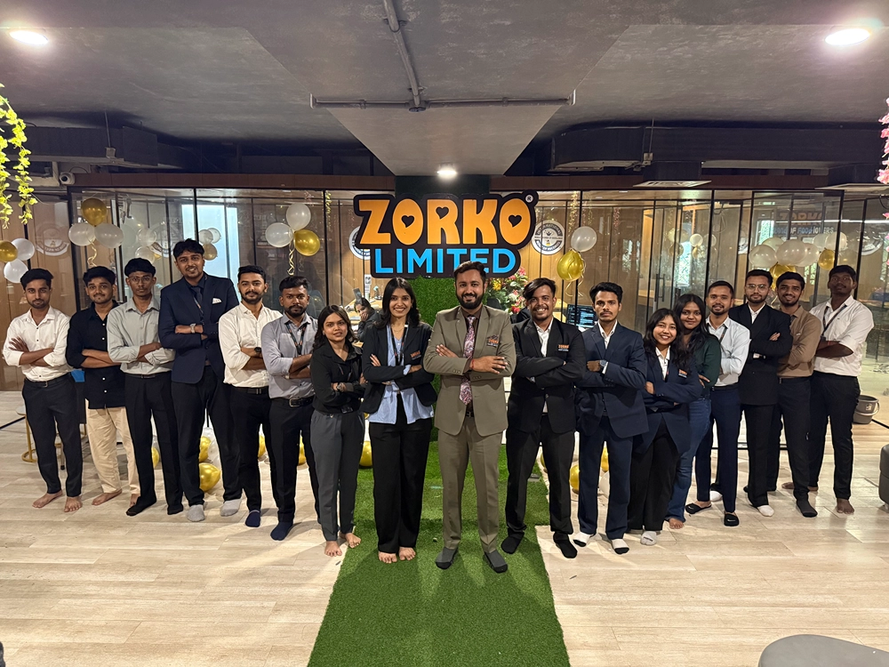

Careers at Zorko Group.
Find your next chapter.
Bring your curiosity, your perspective, and your ambition. Be part of the team building what comes next.
Explore opportunitiesYour strengths.
Our shared ambition.
From conversations with entrepreneurs to the systems behind an outlet, our work brings different skills together in Surat.
Explore the team areas below, then visit Zorko’s official careers page to share your CV, portfolio, and introduction.
View the official applicationBusiness development & marketing
Commercial relationships, brand communication, and creative work.
Operations & partner support
Outlet coordination, training, and day-to-day support.
Corporate functions
Finance, HR, administration, legal, and technology.
These are areas of work, not advertised vacancies. Current openings, role locations, and employment terms are confirmed by Zorko’s recruitment team.

Learn through
the everyday.
A growing company offers a close view of how different parts of a business connect. Zorko Spotlight documents training sessions, employee recognition, and the shared effort behind its operations.
Our official careers page describes a culture built around passion, evolution, friendliness, and meaningful work.

Life around
the working day.
A look at benefits described
in Zorko Spotlight.
Food & refreshments
The magazine lists a 50% food discount and unlimited refreshments among regular benefits.
Space for everyone
Separate amenities and shared team spaces are part of the published office experience.
Recognition
Team celebrations, performance recognition, and employee-of-the-month moments feature in Zorko Spotlight.
Time together
A family dinner, quarterly movie tickets, and annual waterpark passes are described after one year.
Well-being
The publication lists paid menstrual leave among its employee benefits.
Growth & recognition
Financial growth opportunities and a professional photoshoot are also featured in the magazine.
New experiences
A Goa trip and a pilgrimage trip for parents are described among tenure-based experiences.
Wellness & leisure
The magazine includes gym membership and entertainment subscriptions.
Practical support
Bike-loan support and a voucher are also included in the published list.
Benefits are based on Zorko Spotlight, November 2026. Eligibility, availability, and current terms are confirmed by the recruitment team.
Real people.
Shared moments.



A few useful answers.
Where is the corporate office?
310–311, Exult Shoppers, near Siddhivinayak Mandir, Vesu, Surat, Gujarat 395007. Confirm the location of a specific role with the recruitment team.
How do I apply?
Use the official careers page to share your name, contact details, CV, portfolio, and an introduction. Open the official application
Are the team areas listed above open roles?
They describe functions within the company. The recruitment team confirms which positions are currently available.
How do I confirm benefits and working arrangements?
Discuss the current role requirements, work arrangements, benefit eligibility, and terms with Zorko during recruitment.
How to apply for careers at Zorko Group
For food company jobs in Surat, start by choosing a team that fits your experience. Explore sales and business development or other Zorko departments. Share your CV and the role area you are interested in through the official Zorko careers application. Recruitment can confirm current vacancies and interview stages.